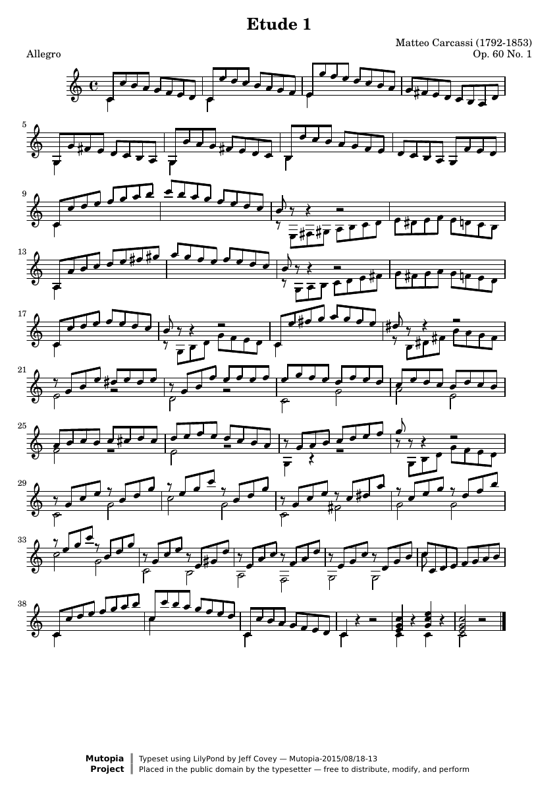

Scale fluency
Etude No. 1 Op. 60 No. 1
An energetic solo-guitar study with flowing eighth-note scales and a sustained bass line. Practice even finger alternation while keeping the bass audible.
IntermediateOpen sheet music